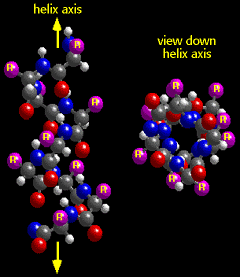

Using Computers to Study Molecular Structure
Secondary Structure
About secondary structure
Regular coiling of the chain of amino acids in a protein is known as "secondary structure". The helix ("alpha" helix) and sheet ("beta" sheet) are the most common secondary structures found in proteins.  When you view the helix in MacMolecule, note the coiling of the amino acid chain to form a long cylindrical structure. The chain coils around an imaginary line known as the helix axis. (Only the first carbon atom of the amino acid side chains is shown in the MacMolecule graphic.)In the sheet, the polypeptide chain is almost fully extended. Multiple sheets align edge-to-edge in proteins to form "pleated" sheets. Hydrogen bonds occur across the edges of the sheets between the C=O of one chain and the N-H of another. The R-groups are directed alternately above and below the pleated sheet.
Opening secondary structures in MacMolecule
When you choose a secondary structure from the list below, MacMolecule will automatically open that file. You can switch back to Netscape by choosing Netscape from the Applications Menu.Secondary Structure MacMolecule Files
Questions
5. Viewing down the axis of an alpha-helix from the end, the amino acid chain coils away from you in which direction? a. clockwise (right-handed)
b. counter clockwise (left hand)6. How are the R-groups of amino acids in the alpha-helix oriented compared to the helix axis? a. nearly parallel to the axis
b. nearly perpendicular to the axis


University of Arizona
Wednesday, September 9, 1998
Contact the Development Team
http://www.biology.arizona.edu
All contents copyright © 1998. All rights reserved.